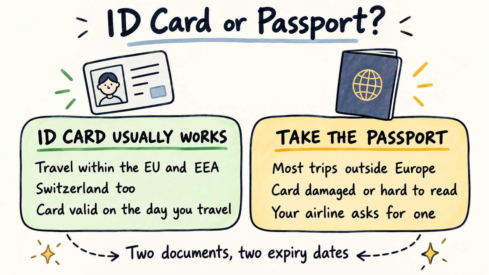

National ID Card for Travel: When It Is Enough
Travel Document Vault
Key Takeaways
- EU and EEA citizens can travel within Europe using just a national ID card, with no passport required for Schengen border crossings.
- Your ID card must be valid on the day you travel, but it doesn't need 6 months of validity remaining like some passports do for destinations outside Europe.
- Airlines set their own document policies. Most accept ID cards for intra-European flights, but always check with your airline before booking.
- A damaged, faded, or water-damaged ID card may be refused at the border even if it hasn't expired, because officials can't read it reliably.
- Unlike passports, national ID cards expire on a faster schedule. Travel Document Vault tracks both documents separately so you don't miss the shorter clock on your ID.
If you're an EU citizen planning a trip to another European country, you probably own a national ID card. And you've probably wondered whether to pack it, your passport, or both. The straight answer is this: within the EU and EEA, your ID card alone is enough for travel, because this post is written for EU and EEA citizens specifically. A British or American reader doesn't have a national ID card for travel, so if that's you, your passport is your only option anyway.
For the rest of Europe, the rules are clear and they're simpler than most people think. The confusion usually comes from airlines, which layer their own requirements on top of the law. Understanding the difference between what Europe legally requires and what your airline wants saves you a last-minute scramble at check-in.
When an EU National ID Card Is Enough
Inside the EU and EEA, a valid national ID card is a full travel document. You can cross borders between EU member states, Norway, Iceland, Liechtenstein and Switzerland using your ID card alone. You do not need your passport. The card must be valid on the day you arrive, and unlike passports for some destinations, there is no "6-month rule" for ID card travel inside Europe.
A card that expires tomorrow is technically still a valid travel document today. That said, renewing well in advance is still smart, because a card that is close to expiry is more likely to be questioned at the border, and damaged cards get refused even when they haven't expired yet.
The Schengen zone is where this flexibility matters most. As an EU citizen with a valid ID card, you can move freely across open borders between Schengen countries without passport control. The same right applies at non-Schengen EU borders too, because the card works through EU free movement law, not Schengen membership.
When You Need the Passport Instead
For most destinations outside the EU and EEA, a national ID card is not recognised as a valid travel document. Entry requirements vary by country and by nationality, so checking your destination's official immigration guidance before you travel is the only way to be sure. A passport is what most immigration systems worldwide expect.
Some EU member states do have bilateral arrangements with certain non-European countries that permit entry on a national ID card, but these vary by nationality and change over time. If you're heading beyond Europe, carry your passport and verify your specific destination's entry requirements with that country's official immigration guidance before booking.
Within Europe, some countries have bilateral agreements that extend ID card acceptance beyond the standard EU framework. These agreements exist, but they can be complex. It's often simpler to carry your passport alongside your ID card whenever you're travelling outside your home country, even if the law says your card alone is sufficient.

Travel Document Vault stores and tracks both your national ID card and your passport, with separate expiry dates and separate reminder schedules. An ID card reminder fires at 3 months, a passport at 8 months, and they're on completely different clocks. Download on the App Store and Google Play.
What to Check on the Card Before You Travel
A valid expiry date is necessary but not sufficient, because border officials are trained to reject documents they cannot read clearly. Before you pack, inspect your ID card the same way border staff will:
- Is the card intact? No bending, cracking, peeling, or separation of the plastic layers.
- Is the photo and personal data legible? Water damage or fading that makes your face or name difficult to read is grounds for refusal, even if the card hasn't expired.
- Is the expiry date clearly printed and unambiguous? Smudging or ink damage counts against you.
- Are the security features visible? Holograms, background patterns, and other anti-counterfeiting elements should be intact.
If your card is showing wear (creases, water marks, faded printing) and you're heading on an international trip, renew it before you go. A damaged card can be refused even if it's valid in print. The cost of early renewal is far less than the cost of a cancelled trip.
Children's ID Cards and the Shorter Clock
Children's ID cards expire faster than adults' cards in most EU countries, just as children's passports do. This matters because families often travel together and forgetting to check one child's document can block the whole group.
We cover this in detail in our guide on family passport management, and the same principle applies to ID cards. Check every document in your group individually before booking, not just your own. A child's ID card that expired two months ago doesn't get a pass because the adult cards are valid.
If the Card Is Refused at Check-In or the Border
If your ID card is refused, your options depend on what else you're carrying. A passport as well usually lets you travel instead, assuming it's valid and meets the destination's entry requirements. With only the ID card in hand, though, there's no fallback: you cannot cross, and border officials have no obligation to accept an alternative document.
The most practical approach is to carry both your ID card and your passport when travelling internationally, even within Europe.
Neither document takes much space, and having both means a damaged or questioned document doesn't end your trip. If your ID card is refused because it's unreadable, your passport becomes your backup.
Two Documents, Two Expiry Dates
The practical challenge of managing travel documents is this: your ID card and your passport are on completely different renewal schedules. A passport might have 8 months of validity remaining while your ID card is down to 2 months. It's easy to renew one and forget the other, especially if you don't travel often.
The harder part is that neither document sends you a reminder. You're supposed to check them yourself. Most people don't, until they're at the check-in desk and an agent tells them one is too close to expiry to be accepted.
What helps is a single place for both documents, one that picks up each expiry date when you scan it and reminds you separately for each, on the schedule that suits that type of document. See our guide on building a complete pre-trip document check for the full picture of what to verify before you travel.
Start today: pull out your ID card, check the expiry date, and look it over for cracks, fading, or warped plastic. If it's borderline, book the renewal before you book the trip.
Frequently Asked Questions
Can I travel to another EU country with just my national ID card?
Yes, EU and EEA citizens can travel to other EU and EEA countries using a valid national ID card alone. You do not need your passport for border crossings within the Schengen zone. The card must be valid on the day you travel.
Do I need both my national ID card and passport when travelling in Europe?
No. Inside the EU and EEA, a valid national ID card is sufficient for border crossings. However, if your ID card is damaged or lost, having a passport as a backup can save a trip from being cancelled. For travel outside Europe, a passport is generally required.
Can I use my national ID card for air travel within Europe?
Most airlines accept national ID cards for flights within Europe, but policy varies by airline. Always check with your airline before booking. Some budget carriers have stricter rules and may prefer a passport for international flights, even within the EU. Showing your ID at the desk is not the moment to find out it is not accepted.
What should I check on my national ID card before travelling?
Check that your card is not damaged, faded, or difficult to read. The card must be valid on the day you travel and not be missing any critical information. A card that is bending, peeling, or water-damaged may be refused at the border even if it has not expired, because border officials cannot read it reliably.
What if my national ID card is refused at the border?
If your ID card is refused, you may be able to use your passport if you have one with you. If you have neither a valid ID card nor a passport, you cannot cross the border and will need to arrange alternative travel. The most reliable option is to carry both documents if possible, especially if either is close to expiry or showing wear.